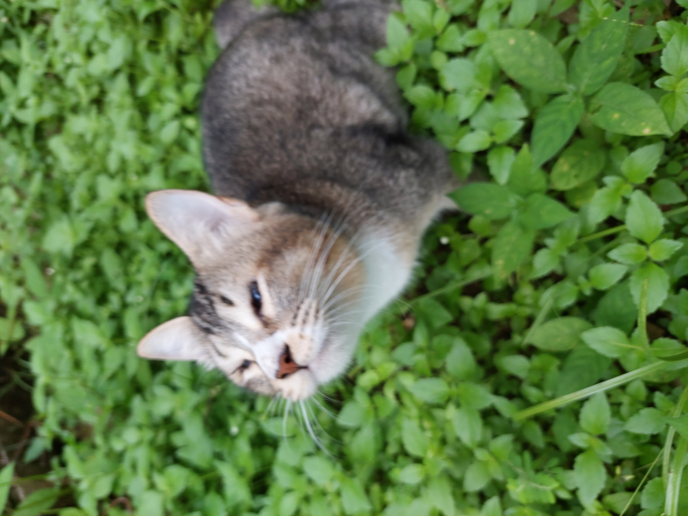
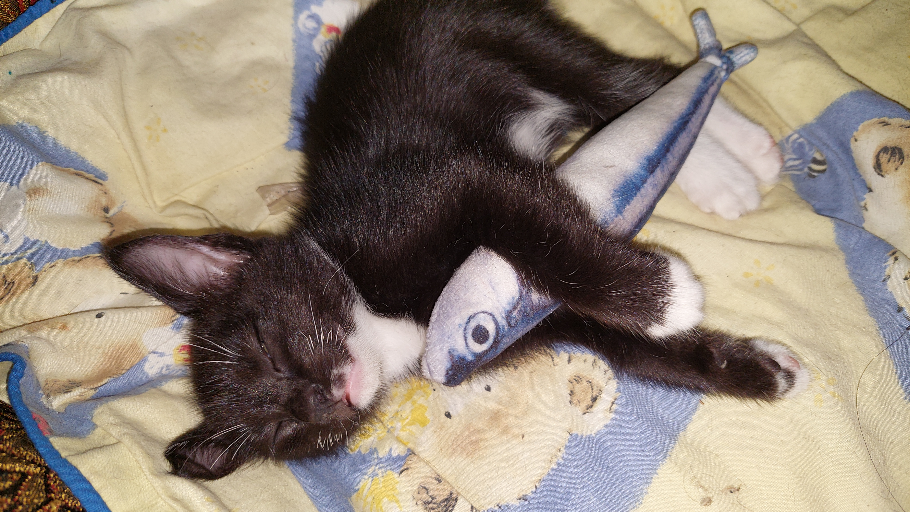
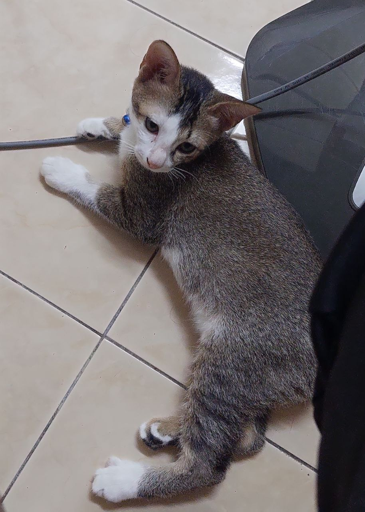
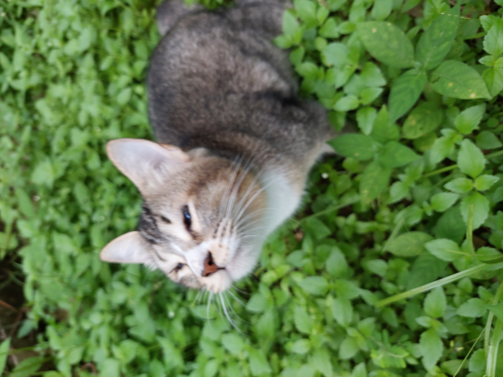
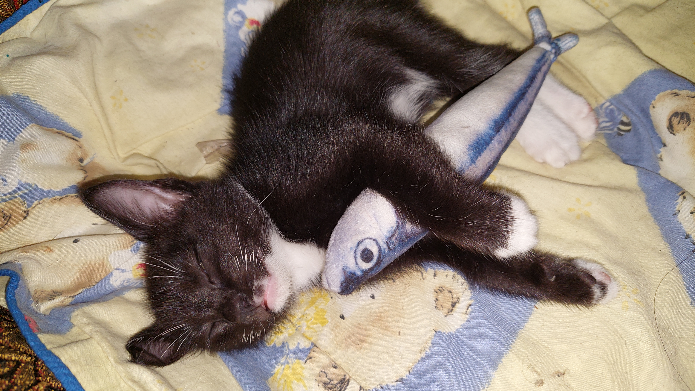
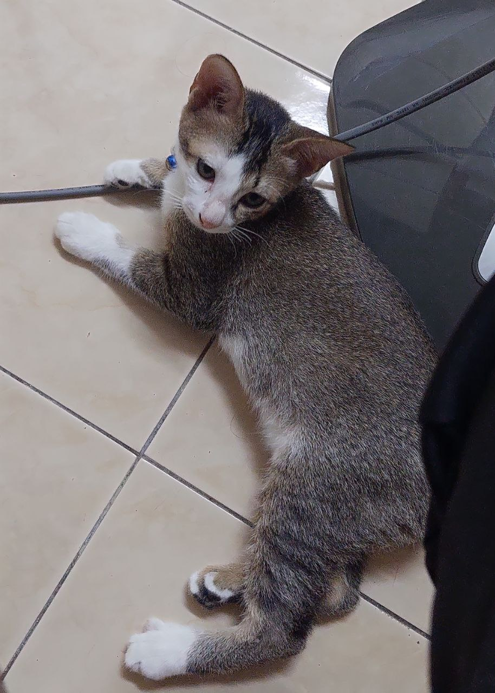

PREGO

MACO
BELO

TAMI
WIPU
| Prego is the name of a female cat I own. She was an abandoned cat who visited my home in July 2021 when she was a kitten. I did not attempt to pet her; I only fed her. But she has gradually started to act like a pet in my home. I constantly tease her while playing with her. When I call her, she frequently displays an emotionless expression. Because the fur on her body is patterned like a circle of wood veins, she also has a fairly unique fur pattern. She now has four children under her care. She has had three pregnancies while being a mother. All of her kittens survived when she gave birth to her first birth before passing away one by one. | PREGO |
| But when she became pregnant again, only one of the three—a boy by the name of Maco—survived and is still alive today. | MACO  |
| And when she gave birth to her kittens for the third time, three of the four survived and were given the names Tami, Belo, and Wipu. So there are now a total of five cats living in my house. | BELO TAMI WIPU  |